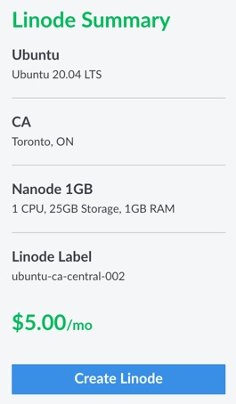
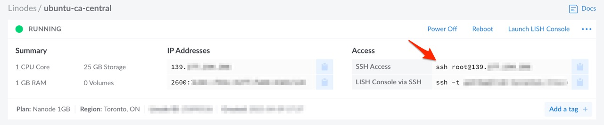

How to set up an Ubuntu VM on Linode for development
It turns out Docker doesn't support M1 Macs (yet). So I decided to rent a VM from Linode. It'll cost about $5/mo in a few months after the sign-up promo expires.
Goal
Get an Ubuntu VM and install basic development tools.
Why not just use your own laptop?
- Maybe you're using an M1 Mac and can't install Docker.
- You want to try out a new database and don't want to risk messing up the system settings on your laptop.
- You're running low on disk space on our laptop.
- You want to start some process that needs to stay up 24/7 (like a web server).
Prerequisites
- An account with Linode (credit card required)
- An SSH Key added to your Linode account
Step 1: Get a Linode Virtual Machine
For this demo, I'll choose a Nanode.
- Ubuntu 20.04LTS
- 1 CPU, 25GB Storage, 1GB RAM
- Remember to add SSH key
- Always use a strong password!

Once you click on the Create Linode button and the VM is provisioned, you can get its IP address:

Step 2: Create a user account and personalize
We will create a sudo-enabled user account, add our dot files, and install some basic tools.
From your laptop, connect to your VM as root:
ssh root@139.xxx.xxx.xxx
Then, create a user account and give it sudo powers:
sudo adduser gosuke # will ask for a password and other information
sudo usermod -aG sudo gosuke
logout
Now, log back in with the new user:
ssh gosuke@139.xxx.xxx.xxx
It's a good idea to secure your VM by (instructions and more can be found here):
- Disallowing root logins over SSH
- Disabling SSH password authentication
Finally, customize your shell etc to your liking. This is just an example of what I do. You may have a simpler or more elaborate set up (including better automation).
echo "set -o vi" >> ~/.bashrc
echo "bind '\"jk\":vi-movement-mode'" >> ~/.bashrc
echo "export VISUAL=vim" >> ~/.bashrc
echo "export EDITOR=vim" >> ~/.bashrc
cd ~
git clone https://github.com/gshiba/homedir.git # un:gshiba pw:use personal access token
cd homedir
ln -f -s ${PWD}/.vimrc ~/.vimrc
ln -f -s ${PWD}/.tmux.conf ~/.tmux.conf
ln -f -s ${PWD}/.gitconfig ~/.gitconfig
ln -f -s ${PWD}/.gitignore_global ~/.gitignore_global
ln -f -s ${PWD}/.git-completion.bash ~/.git-completion.bash
ln -f -s ${PWD}/.git-prompt.sh ~/.git-prompt.sh
echo "source ~/.git-completion.bash" >> ~/.bashrc
echo "source ~/.git-prompt.sh" >> ~/.bashrc
git clone https://github.com/VundleVim/Vundle.vim.git ~/.vim/bundle/Vundle.vim
vi # then execute :PluginInstall
exit
Step 3: Install basic tools
In this section we will install:
- python
- docker
- docker-compose
- other tools such as: jq, tree, postgresql client
First, connect to your VM:
ssh gosuke@139.xxx.xxx.xxx
Install Python
It's useful to have python available system-wide.
sudo apt-get update
sudo apt-get install --yes python3.8 python3-pip python3-venv
echo "alias python='python3'" >> ~/.bashrc
echo "alias pip='pip3'" >> ~/.bashrc
pip3 install black # used by vim
exit # then log back in
Notes:
- We need to manually install python here because Ubuntu 20.04LTS doesn't ship with it.
- Ubuntu's package manager doesn't include venv (virtualenv) with python.
- Tip:
$ type CMDwill reveal whatCMDisaliased to
Reminder on how to to use venv (more on the offical docs):
$ mkdir -p /path/to/project
$ cd /path/to/project
$ python -m venv venv
$ ls
. .. .git venv
$ source venv/bin/activate
(venv)$ which python
/path/to/project/venv/bin/python
(venv)$ deactivate
$
Install Docker
Install Docker by following the docs:
sudo apt-get update
sudo apt-get install --yes \
apt-transport-https \
ca-certificates \
curl \
gnupg \
lsb-release
curl -fsSL https://download.docker.com/linux/ubuntu/gpg | sudo gpg --dearmor -o /usr/share/keyrings/docker-archive-keyring.gpg
echo \
"deb [arch=amd64 signed-by=/usr/share/keyrings/docker-archive-keyring.gpg] https://download.docker.com/linux/ubuntu \
$(lsb_release -cs) stable" | sudo tee /etc/apt/sources.list.d/docker.list > /dev/null
sudo apt-get update
sudo apt-get install --yes docker-ce docker-ce-cli containerd.io
We want our user account to be able to manage Docker, so adjust user permissions (source):
sudo usermod -aG docker gosuke
newgrp docker
exit # then log back in
Test Docker by running the Hello World image
$ docker run --rm hello-world
...
Hello from Docker!
...
Install Docker-compose
Install Docker-compose:
curl -L "https://github.com/docker/compose/releases/download/1.28.6/docker-compose-$(uname -s)-$(uname -m)" -o /usr/local/bin/docker-compose
sudo chmod +x /usr/local/bin/docker-compose
Test Docker Compose:
$ docker-compose --version
docker-compose version 1.28.6, build 5db8d86f
Install other CLI tools not shipped with Ubuntu
Ubuntu comes with a lot of CLI tools I use, but there are still a few missing. YMMV.
sudo apt-get install --yes jq postgresql-client tree
Conclusion
Congratulations 🎉 You now have a basic development VM where you're free to experiment.